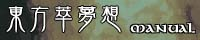

manual ver1.1
本製品はナウなヤングのための体験版です
・インストール方法
東方萃夢想のＣＤをドライブに挿入し、画面の指示に従って下さい
（自動で起動しない場合は、フォルダから直接セットアップを実行して下さい）
・アンインストール方法
プログラムの追加と削除から東方翠夢想を選択して削除して下さい
（もし無い場合はお手数ですがそれっぽいフォルダをそのまま削除して下さい）
-制作-
このゲームに関するお問い合わせは上記サイトまでお願いします
-監修-